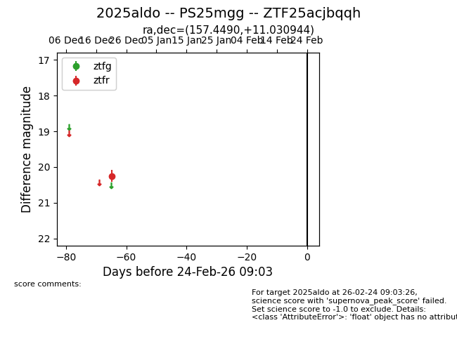
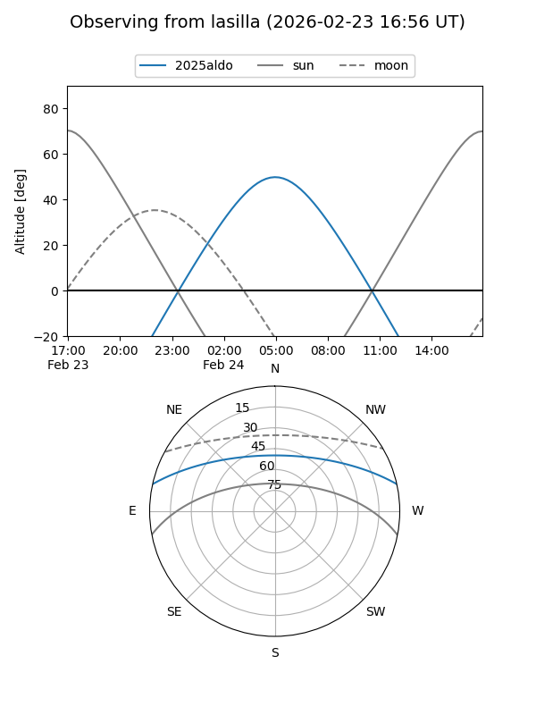
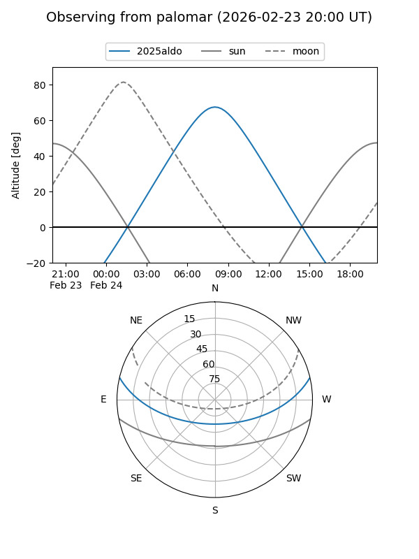

2025aldo
Target 2025aldo at 2026-01-09 12:49
Aliases and brokers:
FINK: link
Lasair: link
ALeRCE: link
TNS: link
YSE: link
alt names
ZTF25acjbqqh (ztf,fink_ztf)
2025aldo (tns,yse)
PS25mgg (panstarrs)
Coordinates:
equatorial (ra, dec) = 157.4490,+11.03094
equatorial (HMS+DMS) = 10:29:47.77,+11:01:51.40
galactic (l, b) = (231.8106,+53.05433)
Flags:
Photometry:
last ztfr=20.25
1 ztfr detections
Lightcurve

Visibility


Additional plots